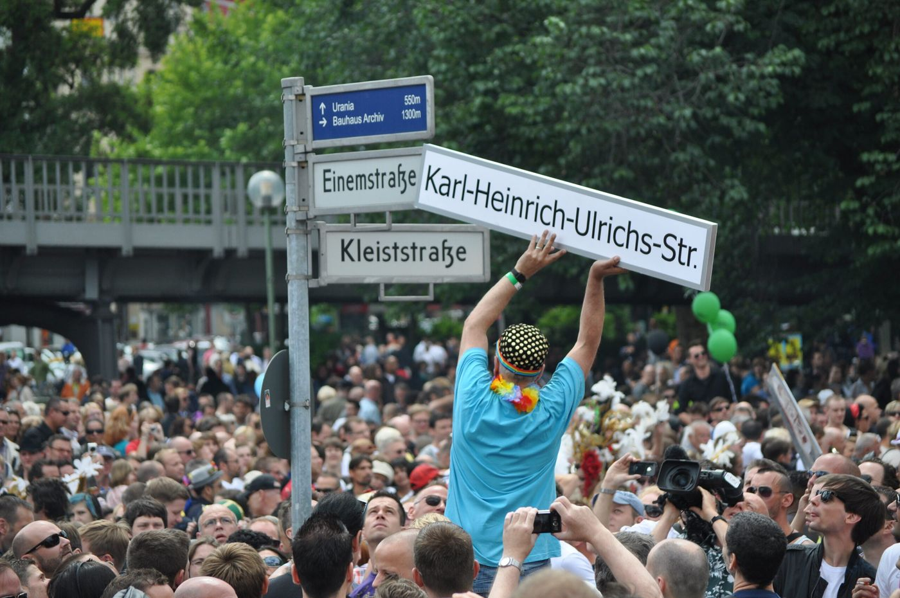

Queere Geschichte
Vom Museum zum Nollendorfplatz
Ein längerer Nachmittag zwischen Lützowstraße und Nollendorfplatz. Essen in der Mitte.
Essen. SOLE DELI, Zietenstraße 7. Im Beitrag vom September 2025: mediterrane Küche in der Zietenstraße 1–9, auch glutenfrei, vegan und halal, mit Plätzen draußen. Öffnungszeiten
Stopps
- Schwules Museum
- SOLE DELI Öffnungszeiten

Restaurant SOLE DELI - Kurfürstenstraße 130
- Nollendorfplatz
- Karl-Heinrich-Ulrichs-Straße

In der Berlin-Presse war es kurz erwähnt – hier noch einmal ausführlich
Gelesen
Das Schwule Museum in der Lützowstraße 73 ist der Anfang, und die Beiträge behandeln es zugleich als Archiv und als angegriffenes Haus.
Am 4. Dezember 2025 wird es vierzig: Organisieren, Sammeln, Archivieren, Ausstellen. Am Sonntag, dem 7. Dezember, 14 bis 18 Uhr, einen Tag nach dem Jahrestag am 6. Dezember, kommen alle Besucherinnen und Besucher umsonst in die Ausstellungen. Am Dienstag darauf, 17 Uhr, ein Infotreffen fürs Ehrenamt im Museumscafé. Am Freitag, dem 12. Dezember, 13 bis 17 Uhr, ein Workshop zum queeren Schreiben mit Lynn Breedlove und Panda Ortmann, in englischer Lautsprache, 10 Euro oder 3. Laufend, in dem Text: Petra Galls Fotos der Berliner FrauenLesben-Szene, bis 23. Februar 2026. Queere ukrainische Kunst, bis 25. Januar 2026. „Love At First Fight“, queere Bewegungen in Deutschland seit Stonewall, bis 29. Juni 2026.
Zwei Jahre früher, am 13. August 2023, eine Pressemitteilung des Hauses, gezeichnet von Jan Künemund, mino Künze und Julia Heuser. Das Museum, eine weltweit einzigartige Institution für queere Geschichte und Kultur, sei seit Februar fünfmal von unbekannten Personen angegriffen worden. In der Nacht zum 24. Februar ein Luftgewehr auf die Frontscheiben, den Namensschriftzug und ein Kunstwerk vor der Tür. Anzeige gegen Unbekannt, breite Berichterstattung, Solidarität. Am 19. März, bei laufendem Betrieb, der Eingang mit Lebensmitteln beschmiert, Mitarbeiterinnen und Mitarbeiter beleidigt. Am 31. März die Front mit einem Feuerlöscher besprüht. Am 21. und am 28. Mai Wasserbomben ins Foyer. Wieder Anzeigen. Dazu das, was der Text ein Grundrauschen nennt: anti-queere Sticker vor dem Haus, rechtsradikale Aufkleber in den Toiletten, Schläge gegen die Scheibe, Beleidigungen am Telefon, in den sozialen Medien, im Gästebuch. Gruppenbezogene Gewalt, schreiben sie, treffe Menschen, Aktivistinnen und Institutionen, die sichtbar Stellung beziehen. Sie wissen von vernetzten Häusern, dass sie damit nicht allein sind. Die Absichtserklärungen von Senat und Bund, anti-queere Gewalt präziser zu erfassen, werden begrüßt. Gewünscht wird Hilfe, die über Polizei und Aufklärung hinausgeht: finanziell, personell, psychologisch. Die Versicherung stelle in Frage, ob eine Scheibe mit Einschusslöchern ausgetauscht werden müsse, solange sie intakt sei. Schriftzug, Kunstwerk und Reinigung trage das Haus selbst. Sicherheitskonzept, Training, Präventionsförderung neben dem Tagesgeschäft. Gegründet 1985, eines der größten LGBTIQ-Museen der Welt, Sammlung etwa 1,5 Millionen Archivalien, Ausstellungsfläche knapp 700 Quadratmeter, normalerweise bis zu drei Ausstellungen zugleich, gefördert vom Land Berlin. Der Ort bleibt der erste Halt.
Älter, und nicht auf diesem Nachmittag, liegt das Institut für Sexualwissenschaft. Der Beitrag vom 19. April 2023 erzählt es über Magnus Hirschfeld (14. Mai 1868 bis 14. Mai 1935) und das Leitmotiv „Durch Wissenschaft zur Gerechtigkeit“. Im Mai 1897 gründet er mit anderen das Wissenschaftlich-Humanitäre Komitee, um den Paragrafen 175 abzuschaffen. Er gilt als Begründer der Sexualwissenschaft, schreibt eine dreibändige Sexualpathologie und führt 1930 mit Ludwig Levy-Lenz die erste geschlechtsangleichende Operation durch. Nach 1918 kauft er die ehemalige Villa Joachim, In den Zelten 10, Ecke Beethovenstraße 3, zeitweiliges Palais des Fürsten von Hatzfeld, und gründet dort am 6. Juni 1919 das private Institut, das erste seiner Art. Archiv, Museum, Lehrstätte, Beratung, ein Zufluchtsort, solange Homosexualität illegal ist und trans Personen diskriminiert werden. Knapp vierzehn Jahre. Den Nationalsozialisten ist er verhasst als Jude, als Homosexueller, als Sozialist und als unabhängiger Forscher. Anfang Mai 1933 stürmen Sportstudenten des Nationalsozialistischen Deutschen Studentenbundes das Institut, stehlen 15 Zentner Literatur und bringen sie zum Studentenhaus in der Oranienburger Straße. Am 10. Mai werden die Bücher auf dem Opernplatz verbrannt. In den folgenden Jahren wird die homosexuelle Bürgerrechtsbewegung zerschlagen, Treffpunkte geschlossen, Zeitschriften verboten, Zehntausende homosexuelle Männer zu Gefängnis, Zuchthaus und Lager verurteilt. Heute, schreibt der Beitrag, eine eher bescheidene Gedenktafel, aufgestellt am 6. Juli 1994, 75 Jahre nach der Gründung, in der Nähe des ehemaligen Standorts. Eine Büste Hirschfelds steht im Schwulen Museum. Der Koalitionsvertrag einer damals möglichen CDU-SPD-Regierung von 2023 sieht vor, den 14. Mai als Magnus-Hirschfeld-Tag zu begehen. Dieser Nachmittag bleibt südlich der Lützowstraße.
Essen ist das SOLE DELI, Beitrag vom 16. September 2025: mediterrane Küche in der Zietenstraße 1–9, modern, familienfreundlich, glutenfrei, vegan und vegetarisch, auch halal, von der Vorspeise bis zum Dessert. Genannt werden hausgemachtes Bananenbrot zu 7,50 Euro, eine vegane Breakfast-Platte zu 13 Euro, Lachs Piccata zu 18 Euro. Plätze draußen. Geöffnet, in diesem Text, täglich von 9 bis 18 Uhr. Geeignet für Familienfeiern und größere Gruppen, auch Catering. Zwischen Museum und Platz.
In der Kurfürstenstraße 130, nahe am Nollendorfplatz, sitzt die Berliner Aids-Hilfe. Der Text zum 1. Dezember 2022 erinnert daran, dass Aids als „Schwulenseuche“ bezeichnet wurde, dass viele die Erkrankung anfangs verbargen, dass Unsinn verbreitet wurde, und dass seit Beginn der Pandemie weltweit über 40 Millionen Menschen gestorben sind. Der Verein kämpft seit 1985 als Menschenrechtsorganisation gegen die Stigmatisierung HIV-positiver Menschen. Gemeinnützig und mildtätig, heute auch im Auftrag des Landes Berlin für Versorgung und Prävention bei HIV, Aids, sexuell übertragbaren Infektionen und Hepatitiden. Im Haus ein Testzentrum und Beratung. Selbsthilfe, Gesprächsgruppen, Begegnung, individuelle Hilfe. Mit dem Land bei der Fast-Track-Cities-Initiative, Aids bis 2030 zu beenden, Null Diskriminierung im Vordergrund. Der Text sagt auch: heute leben rund 40 Millionen Menschen mit HIV, und heute müsse niemand mehr an HIV oder Aids sterben, schon gar nicht in Europa und Deutschland. Zugleich starben 2021 noch 650.000 HIV-Infizierte, vor allem in afrikanischen und asiatischen Ländern. In Deutschland seien 90 Prozent der Infektionen identifiziert, 97 Prozent der Diagnostizierten in Behandlung, bei 96 Prozent der so Behandelten keine Viren mehr nachweisbar, also nicht mehr ansteckend. Lea Susanna wird zitiert: sie lebe seit 19 Jahren mit HIV, mit effektiver Behandlung könne sie HIV nicht übertragen. Das Motto des Welt-Aids-Tags in dem Jahr: „Equalize“. Benannt werden, mit Winnie Byanyima von UNAIDS, schwule Männer, Menschen, die intravenös Drogen konsumieren, Sexarbeiterinnen und Sexarbeiter, Menschen in Haft, junge Frauen in Afrika, Transpersonen. Sie alle bräuchten Zugänge, die für sie passen.
Der Nollendorfplatz ist im Beitrag vom 10. Juli 2023 der Ort des Lesbisch-schwulen Stadtfests. Der Regenbogenfonds veranstaltet es zum 29. Mal, Motto „Gleiche Rechte für Ungleiche – weltweit!“, am 15. und 16. Juli 2023, täglich ab 11 Uhr, auf 20.000 Quadratmetern in der Motz-, Eisenacher-, Fugger- und Kalckreuthstraße. Fünf „Welten“: Film, Politik, Positive, Gesundheit und Wellness, Radio, Sport, dazu lesbische, schwule, bisexuelle und trans Projekte. Der Text spricht von weit über 350.000 Besucherinnen und Besuchern und von Europas größtem Fest dieser Art. Sechs Bühnen werden benannt, darunter 98.8 Kiss FM, Connection mit House und Techno, die FrauenLesbenTrans-Bühne, Queere Medien, Sunshine Live. Am Samstag von 15.30 bis 16.30 Uhr eine Politik-Talkshow mit Gerhard Hoffmann auf der Stadtfestbühne an der Ecke Eisenacher- und Fuggerstraße, danach Rock und Pop, samstags bis 23 Uhr, sonntags bis 21 Uhr. Das Foto im Stück zeigt das Fest von 2022.
Die Karl-Heinrich-Ulrichs-Straße daneben ist die umbenannte Einemstraße. Der Beitrag vom 30. November 2023 hängt die Umbenennung an einen neuen Layer zur queeren Geschichte in der berlinHistory-App, erarbeitet mit dem Schwulen Museum und dem Lesben- und Schwulenverband Berlin-Brandenburg, gefördert vom Berliner Beauftragten zur Aufarbeitung der SED-Diktatur und von zwei Senatsverwaltungen, zehn Autorinnen und Autoren. Rund 70 Orte, in Ost und West, vor der Teilung, Kultur, Treffpunkte, Vereine, Verlage, Ereignisse, Politik. Die Fragen, die der Text stellt, reichen über diesen Kiez hinaus: das Magnus-Hirschfeld-Ufer, eine Souterrain-Bar der fünfziger Jahre, Charlotte von Mahlsdorfs Gründerzeitmuseum, die Mulackritze, David Bowies Wohnung, das Grab von Johanna Elberskirchen. Integriert ist der Audiorundgang zur Sexarbeit am Bülowbogen, „Wir waren schon immer überall“, und eine Fahrrad-Audiotour zu Aids und HIV in Ostberlin, „AIDS: Nicht durch die Mauer zu stoppen“. Queere Geschichte, schließt der Beitrag, sei immer auch Demokratiegeschichte.